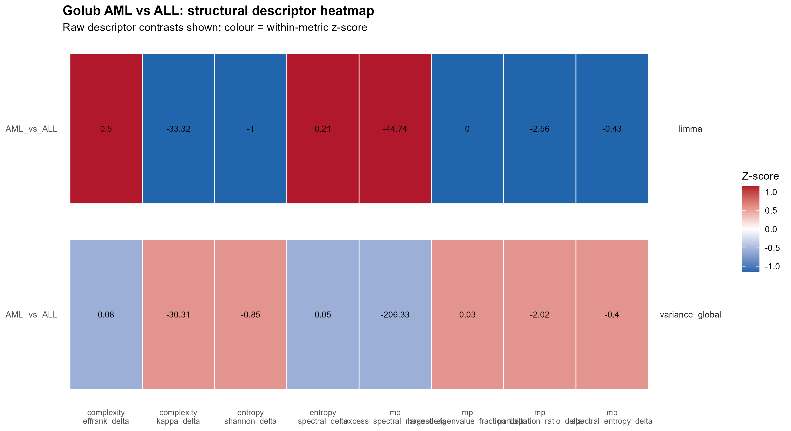
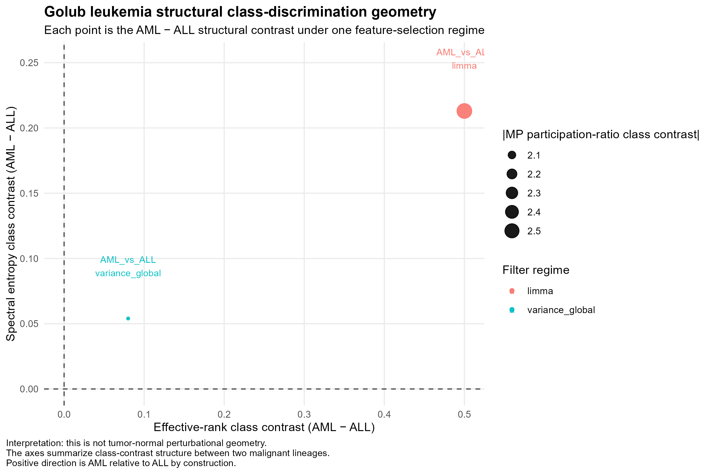
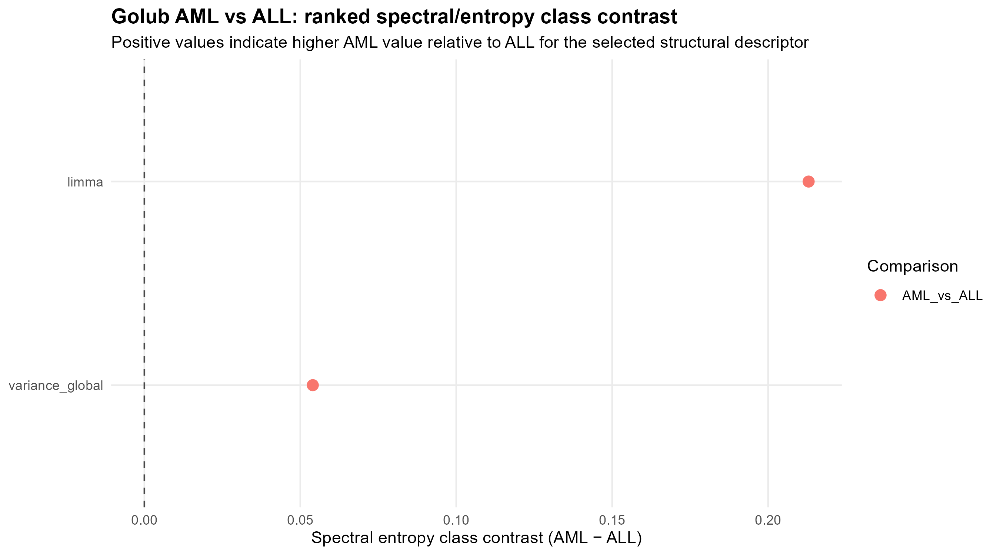
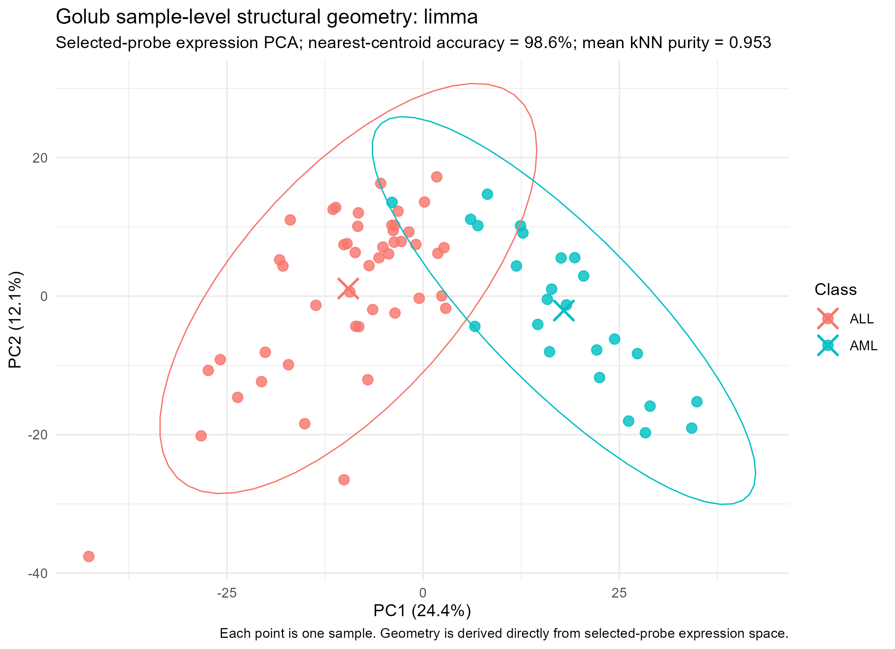
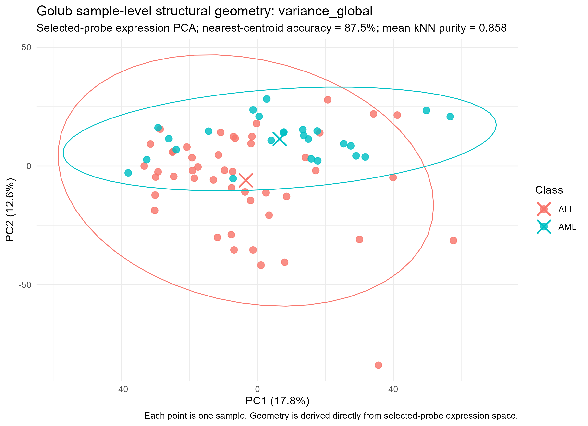
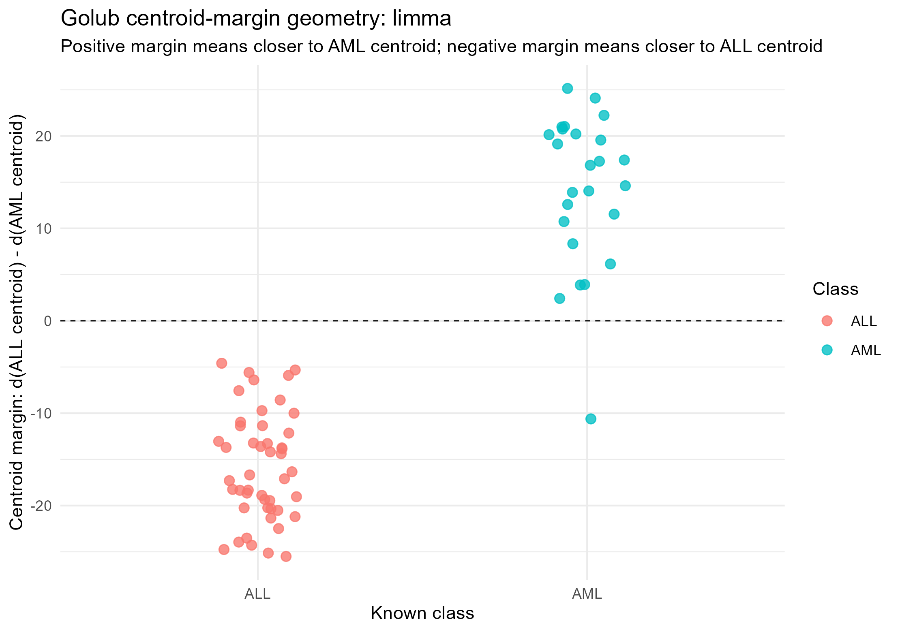
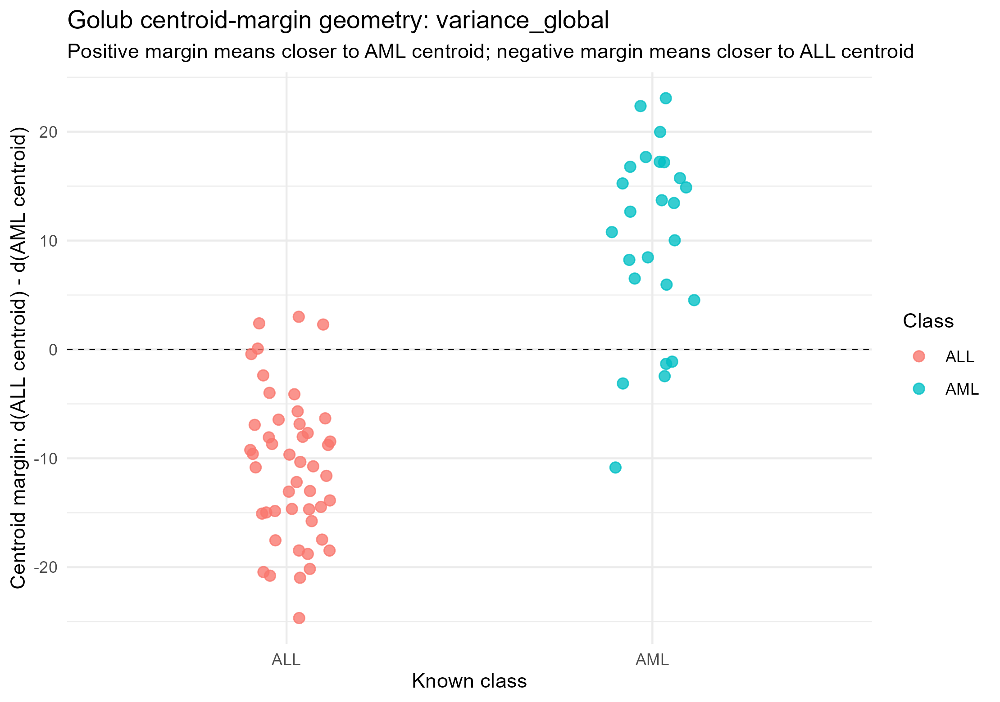

| Feature-space pair | Jaccard overlap | Interpretation |
|---|---|---|
| limma vs variance_global | 0.188 | Distinct feature spaces |
| variance_comparison vs variance_global | 1.000 | Identical probe sets |
Golub Leukemia Structural Validation Study
From tumor-normal perturbation to malignant lineage structural geometry
Purpose of the Golub phase
The first-generation Global Cancer Structural Inference Framework was developed on the Ramaswamy global cancer microarray dataset. That phase was deliberately organized around tumor-normal or quasi-tumor-normal perturbational contrasts. In that setting, the framework asked whether malignant tissue could be described as a displacement in transcriptomic structural state space.
This design was useful for developing the framework, but it left an important methodological objection unanswered:
The observed structural signals may simply reflect the large biological distance between normal tissue and tumor tissue.
If that objection were correct, then the framework would be detecting a generic tumor-normal perturbation rather than a more general structural organization of transcriptomic states. The next validation dataset therefore needed to remove the normal tissue axis altogether.
The Golub leukemia study provided exactly such a test. Golub et al. framed acute leukemia as a problem of expression-based class discovery and class prediction, specifically the distinction between acute lymphoblastic leukemia (ALL) and acute myeloid leukemia (AML). The paper described a general strategy for cancer classification from gene expression monitoring and reported that AML and ALL could be discovered and predicted from expression data alone. It used acute leukemia as a test case because the two classes are clinically and biologically distinct but both malignant.
For the Structural Inference Framework, this changed the question. Ramaswamy data asked:
How does tumor transcriptomic organization move relative to normal tissue?
Golub data asks:
Can structural transcriptomic geometry distinguish two malignant lineages without any normal reference state?
Thus the Golub phase was not intended to replicate the original Golub classifier. Instead, it was designed as a focused methodological bridge from perturbational geometry to structural class-discrimination geometry.
Dataset logic and analytical grammar
The Golub analysis uses the AML-vs-ALL contrast as a malignant lineage comparison. ALL is treated as the reference class and AML as the target class only for the purpose of computing directed contrasts:
\[ \Delta S = S_{\mathrm{AML}} - S_{\mathrm{ALL}} \]
This convention does not imply that ALL is normal. It simply establishes the sign of the structural contrast.
| Ramaswamy phase | Golub phase |
|---|---|
| Tumor versus normal | AML versus ALL |
| Perturbational displacement | Malignant lineage contrast |
| Normal as biological reference | ALL as computational reference |
| Question: tumor reorganization | Question: class-discriminative organization |
| Structural perturbation | Structural class geometry |
The analysis reused the core structural engines: complexity, entropy, Marčenko–Pastur spectral geometry, structural synthesis, diagnostic plotting, feature-space robustness logic.
Feature-space regimes
The Golub pipeline initially generated three feature-selection regimes: limma, variance_comparison, and variance_global.
A feature-space overlap audit showed that variance_comparison and variance_global selected the identical 3,000-probe feature set for the AML-vs-ALL comparison. Consequently, downstream figures and interpretation use two effective feature spaces: limma, representing a supervised AML-vs-ALL differential feature space; and variance_global, representing an unsupervised variance-driven feature space.
Class-level structural phenotype
The primary structural phenotype table summarizes the AML-minus-ALL class contrast for each descriptor.
| Filter regime | EffRank Δ | Kappa Δ | Shannon Δ | Spectral entropy Δ | MP excess spectral mass Δ | MP leading-mode fraction Δ | MP participation ratio Δ | MP spectral entropy Δ |
|---|---|---|---|---|---|---|---|---|
| limma | 0.50 | -33.32 | -1.002 | 0.213 | -44.742 | -0.001 | -2.556 | -0.435 |
| variance_global | 0.08 | -30.31 | -0.850 | 0.054 | -206.328 | 0.028 | -2.020 | -0.396 |
AML has a positive effective-rank contrast in both retained feature spaces. The contrast is stronger under limma and weaker under variance_global, but the direction is stable. Spectral entropy is also positive under both feature spaces. Some covariance-spectral descriptors move in the opposite direction, indicating that the lineage contrast is not a simple one-dimensional increase or decrease in all structural measures.
Structural descriptor heatmap

Class-discrimination geometry

Both feature spaces place AML relative to ALL in the positive-positive quadrant for effective-rank and spectral-entropy contrast. limma produces a larger displacement, while variance_global produces a smaller displacement.
Ranked spectral/entropy contrast

The ranked spectral/entropy figure emphasizes the same point: AML shows a positive spectral-entropy class contrast under both retained feature spaces, with limma producing the stronger signal.
Sample-level structural geometry
The sample-level geometry stage represents each sample directly in selected-probe expression space and summarizes the resulting geometry by PCA coordinates, distance to class centroids, centroid margin, nearest-centroid assignment, and k-nearest-neighbor class purity.
| Filter regime | Samples | Selected probes | PC1 variance | PC2 variance | Nearest-centroid accuracy | Mean kNN purity | Median absolute centroid margin |
|---|---|---|---|---|---|---|---|
| limma | 72 | 1072 | 24.4% | 12.1% | 98.6% | 0.953 | 16.757 |
| variance_global | 72 | 3000 | 17.8% | 12.6% | 87.5% | 0.858 | 10.838 |
Sample-level PCA geometry


Centroid-margin geometry
The centroid margin is defined as:
[ d() - d() ]
Positive values indicate that a sample is closer to the AML centroid. Negative values indicate that a sample is closer to the ALL centroid.


What was found?
The Golub phase produced five main findings.
1. The framework transfers to a cancer-versus-cancer setting
The same structural engines used in the Ramaswamy perturbational analysis could be applied to Golub without normal tissue controls.
2. AML and ALL occupy distinct structural states
The descriptor table, class-geometry plot, and sample-level geometry all support the same conclusion: AML and ALL are distinguishable as transcriptomic structural states.
3. The structural signal is feature-space dependent but directionally robust
limma produces stronger separation than variance_global, but both feature spaces preserve the same directional structural interpretation.
4. Two variance regimes collapse to one effective feature space
The feature-space audit showed that variance_comparison and variance_global were identical. Reporting was therefore refactored to avoid presenting duplicated variance results as independent evidence.
5. Sample-level organization reinforces descriptor-level findings
AML and ALL separate in structural descriptor space, and individual samples also organize around class-specific centroids.
Conclusion
The Golub AML-vs-ALL analysis functions as a bridge between the Ramaswamy global cancer perturbation study and the Dutch breast cancer clinical validation phase. Ramaswamy demonstrated that tumor transcriptomes can be described as structural perturbations relative to normal tissue. Golub demonstrates that structural inference remains meaningful when the normal reference is removed and the problem becomes discrimination between malignant lineages.
Therefore, the Golub phase supports the conclusion that the Structural Inference Framework is not merely a tumor-normal perturbation detector. It can recover stable, biologically interpretable organization among malignant transcriptomic states. This justifies moving to the Dutch breast cancer phase, where the next question is whether such structural states possess clinical and prognostic meaning.
References
Golub, T. R., Slonim, D. K., Tamayo, P., Huard, C., Gaasenbeek, M., Mesirov, J. P., Coller, H., Loh, M. L., Downing, J. R., Caligiuri, M. A., Bloomfield, C. D., & Lander, E. S. 1999. “Molecular Classification of Cancer: Class Discovery and Class Prediction by Gene Expression Monitoring.” Science 286: 531–537.
Data provenance
| File | Role |
|---|---|
| tables/synthesis/structural_phenotype_wide.csv | Descriptor-level AML-minus-ALL structural contrasts |
| tables/synthesis/structural_phenotype_long.csv | Long-form descriptor table by engine and metric |
| tables/synthesis/structural_phenotype_summary.csv | Descriptor summary by engine and filter regime |
| tables/synthesis/sample_level_geometry/golub_sample_level_geometry_summary.csv | Sample-level PCA, centroid, and kNN summary |
| plots/synthesis/golub_structural_descriptor_heatmap.png | Descriptor heatmap |
| plots/synthesis/golub_aml_all_class_geometry.png | Class-discrimination geometry |
| plots/synthesis/golub_spectral_entropy_class_contrast_ranked.png | Ranked spectral/entropy contrast |
| plots/synthesis/sample_level_geometry/golub_sample_level_pca_limma.png | Sample-level PCA under limma |
| plots/synthesis/sample_level_geometry/golub_sample_level_pca_variance_global.png | Sample-level PCA under variance_global |
| plots/synthesis/sample_level_geometry/golub_sample_level_centroid_margin_limma.png | Centroid-margin geometry under limma |
| plots/synthesis/sample_level_geometry/golub_sample_level_centroid_margin_variance_global.png | Centroid-margin geometry under variance_global |